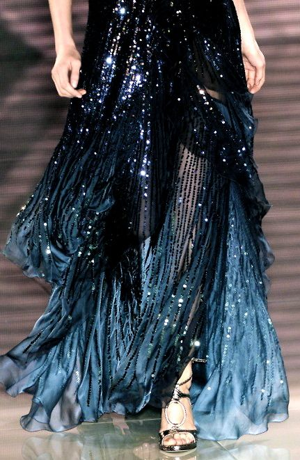
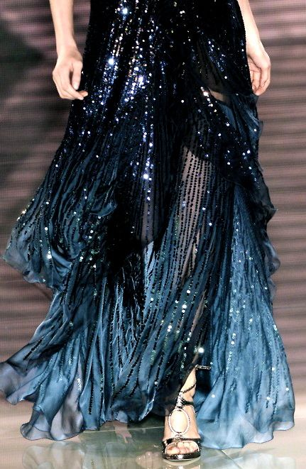

Inspiration
La "Sea of Stars" est un phénomène naturel qui transforme la mer en un véritable ciel étoilé… mais sur l’eau. Ce spectacle magique se produit sur certaines plages du monde, notamment sur l’île de Vaadhoo, dans les Maldives. Ce scintillement bleu intense est dû à un type de plancton bioluminescent, appelé dinoflagellé qui émet de la lumière lorsqu’il est agité – par les vagues, les mouvements du vent, ou même les pas sur le sable mouillé. Ainsi, chaque éclaboussure, chaque vague devient une étoile mouvante, créant l’illusion d’une mer étoilée qui répond à la présence humaine. Ce thème évoque une nuit magique et élégante, entre ciel et mer, où la nature devient spectacle. Vaadhoo – Sea of Stars, c’est l’idée d’une beauté mystérieuse, calme et hypnotique.
 
